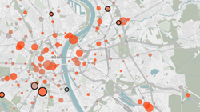

Diese Seite dient der Vorstellung des Projekts bis zum offiziellen Launch der Projektwebsite.
Welche Möglichkeiten bieten uns neue Technologien, um das gesellschaftliche Zusammenleben zu verbessern? Wie kann das Know-How von technologischen Vordenkern der öffentlichen Verwaltung helfen, bürgernäher, transparenter und effizienter zu werden?
Diese und weitere Fragen adressiert das Programm Code for All.
Ziel
Das Ziel des Code for All Stipendienprogramms ist es, das Innovationspotenzial junger technikaffiner Experten, für die öffentliche Verwaltung nutzbar zu machen, um neue Lösungsansätze für alltägliche Herausforderungen in der Interaktion zwischen Bürger und Verwaltung zu denken und Anwendungen für moderne öffentliche Dienstleistungen zu entwickeln. Konkret geht es um ein neunmonatiges Stipendienprogramm in enger Kooperation mit ausgewählten Partnerstädten mit Unterstützung namhafter IT Unternehmen.
Ansatz
All zu oft bleiben die Bedürfnisse der Bürger, wie sie sich die Kommunikation mit der Verwaltung wünschen und die Wirklichkeit von Verwaltungsprozessen zwei getrennte Welten. Viele Bürger, aber auch MitarbeiterInnen in der Verwaltung, wünschen sich eine Verbesserung der Prozesse. Genau an diesen Punkten setzt das Programm Code for All an. Über Stipendien werden junge Vordenker aus den Bereichen Technologie, Design und Kommunikation in ausgewählte Verwaltungseinheiten der Partnerstädte integriert und arbeiten gemeinsam mit den Verwaltungsmitarbeitern an neuen Lösungsansätzen für zeitgemäße öffentliche Dienstleistungen.
Von dieser partnerschaftlichen Zusammenarbeit profitieren alle Akteure gleichermaßen: Die Städte bekommen ein eigenes Innovationsteam, das sich intensiv mit den Prozessen innerhalb der Verwaltung auseinandersetzt und über einen neunmonatigen Zeitraum hinweg an Anwendungen und technologischen Lösungen für die Stadt arbeitet. Die Stipendiaten bekommen durch das Programm Einblick in Prozesse der Verwaltung, Weiterbildungen und Trainings von Experten aus den Bereichen Software- und Produktentwicklung, Usability und Marketing sowie die Chance mithilfe ihrer Fähigkeiten einen positiven Beitrag zum Gemeinwesen zu leisten.
Ergebnisse
Die Entwicklung von innovativen und bürgerorientierten öffentlichen Dienstleistungen, Services und Apps ist Ergebnis des Programms, an dem sich der Erfolg messen lässt. Wichtig ist jedoch ein gemeinsames Verständnis aller Partner, dass die Wirkung des Programms über die konkreten Anwendungen hinausweist. Die Zusammenarbeit mit den Stipendiaten soll Behörden in ihren Arbeits- und Herangehensweisen dazu ermutigen neue Lösungsansätze auszuprobieren, externes Wissen einzubeziehen und so die Verwaltungskultur nachhaltig in Richtung offener Prozesse und mehr Innovationen zu verändern.
Das Konzept von „Code for All“ basiert auf dem erfolgreichen Programm „Code for America”, das durch seinen interdisziplinären und praxisorientierten Ansatz viel Aufmerksamkeit bekommen hat und auf eine ganze Reihe sehr erfolgreicher Anwendungen, Services und Apps verweisen kann. Die Organisation „Code for America“ ist Partner und Unterstützer des deutschen Programms.
Themenliste zur Inspiration
Aus unserer Erfahrung mit anderen Projekten genießen folgende Themengebiete bzw. Servicebereiche eine gewisse Popularität und eignen sich daher, um als Inspirationsquelle für Projekte zu dienen. Wenn sich zusätzlich eine Verknüpfung zu bestehenden Plänen und Vorhaben einer Stadt herstellen lassen, umso besser.
- Wahldaten: historische Daten, Standorte von Wahllokalen
- Verkehrsdaten: Straßen und öffentlicher Nahverkehr (Fahrpläne, Staumeldungen, Haltestellenkoordinaten, Stationspläne, Daten zu Unfallhäufungsstellen)
- Daten zu Bildungseinrichtungen: Schülerzahlen, Bewertungen, Schultypen, Standortdaten, Öffnungszeiten von Bibliotheken
- Finanzdaten: Daten zu Einnahmen und Ausgaben
- Daten zur Ver- und Entsorgung: Energieversorgung und Verbrauch, Termine Müllabfuhr, Standorte von Altglascontainern, Problemstoffsammelstellen
- Daten zu Ausschreibungen: Verträge, Auftragsvergabe
- Daten zur städtischen Bauplanung: Daten zu Planfeststellungsverfahren, Daten zur Flächenwidmung
- Gesundheitsdaten: Hygienekontrolldaten von Restaurants & Krankenhäusern
- Umweltdaten: Wasserqualität von Seen, Luftqualität, Ozon, Co2, Feinstaub, Lärmmessungen
- Geodaten: Kartendaten, Adressenregister, Standortkoordinaten von öffentlichen Einrichtungen
Beispiele zur Inspiration
Oftmals überzeugender sind Beispiele von Projekten, die tatsächlich umgesetzt wurden. Aus Projekten unseres Partnerprogramms "Code For America" sowie aus unserer eigenen Erfahrung im deutschsprachigen Raum sind im Folgenden vier Beispiele aufgeführt, die in kurzer Form die Problemstellung und den Lösungsansatz präsentieren.
Screendoor.io

Das Problem: Öffentliche Ausschreibungsverfahren in den USA sind komplex und intransparent. Das führt dazu, dass die immer gleichen Unternehmen, die mit den komplizierten Formalitäten von Ausschreibungen vertraut sind, die Zuschläge für Aufträge bekommen und viele andere Dienstleister ausgeschlossen werden.
Offene Verkehrsdaten
Das Problem: Im Bereich “Verkehr” erheben Städten und Kommunen eine Vielzahl an Daten. Diese Datensätze bieten spannende Einblicke und Informationen für BürgerInnen, werden vielerorts jedoch nur in unübersichtlichen Tabellen und nicht als maschinenlesbare Datensätze veröffentlicht.
Honolulu Answers
Das Problem: Die öffentliche Verwaltung ist ein komplexer Apparat, diese Komplexität spiegelt sich oft auch auf den Webseiten der Verwaltung wieder. Die Seiten haben oft mehrere Navigationsebenen und viele Menüpunkte, was die einfache und schnelle Auffindbarkeit von Informationen erschweren kann.
Textizen
Das Problem: Ob kommunale Finanz- oder Bauplanung, Bürger haben immer mehr Möglichkeiten sich zu beteiligen und mitzubestimmen. Zudem werden immer mehr Beteiligungsverfahren online durchgeführt, was die Teilnahme vereinfacht und die Möglichkeit bietet, mehr Menschen zu erreichen. Trotz dieser Optimierungen und dem Zuwachs an Angeboten ist vielerorts kein signifikanter Anstieg in den Teilnehmerzahlen zu beobachten.
Interessiert? Melden Sie sich bei uns!
Wir freuen uns dieses erfolgreiche Programm gemeinsam mit ausgewählten Partnerstädten, mit Unterstützung durch den Deutschen Städte- und Gemeindebund und Vitako, sowie mit Unterstützung durch Google und weiterer Sponsoren und Kooperationspartner auch in Deutschland umzusetzen.
Haben Sie Interesse und wollen Sie Teil dieses erfolgreichen Programms werden? Dann melden Sie sich! Für den Programmstart sind wir noch auf der Suche nach weiteren innovativen Partnerstädten, ideellen Unterstützern und Sponsoren, die Teil des Programmstarts werden möchten.
Wenn Sie das Konzept des Programms genau so vielversprechend, notwendig und spannend finden wie wir, würden wir uns freuen, Ihnen das Konzept näher zu erläutern und die verschiedenen Optionen vorzustellen. Für Rückfragen stehen wir ihnen jederzeit gerne auch telefonisch zur Verfügung.
Kontakt
Ansprechpartner: Daniel Dietrich und Julia Kloiber
E-Mail: info@okfn.de
Telefon: +49 30 57703666 0 | Fax: +49 30 57703666 9
Open Knowledge Foundation Deutschland
Gneisenaustraße 52 | D-10961 Berlin
Informiert bleiben